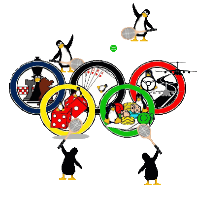

Linux ha recorrido un largo camino desde que Linus Torvalds desarrolló su
primer kernel. Desde el comienzo, Linux pasó a ser el sueño de los
desarrolladores. Y ahora que el sistema operativo ha demostrado que puede
proporciona una de las mejores soluciones (tal vez la mejor) de cara a, por
ejemplo, redes locales y servidores para internte, ha llegado la hora de
explorar las capacidades de Linux en otras áreas. En particular, áreas
que tradicionalmente han sido dominadas por sistemas como el Windows
de Microsoft y el Mac de Apple. KDE (con la versión 2.0 inminente) y
GNOME son escritorios que dan a Linux un entorno gráfico potente y sencillo
a la vez. Y son entornos gráficos libres, abiertos y configurables. Por otra
parte, software como las suites de oficina y The GIMP van, poco
a poco, acercando Linux a usuarios sin un perfil técnico. Linux Torvalds sabe
bien lo que hace cuando pide mejor soporte para dispositivos USB y
plug-and-play en la próxima versión estable del kernel (2.4). Como el mismo
ha dicho, Linux estará tecnológicamente preparado para lograr la supremacía
en los próximos cinco años. En ese camino sólo queda un campo por tomar en
consideración: el mercado de los juegos. Más y mejores juegos deberían ser
desarrollados para Linux. Y eso es lo que está empezando a ocurrir ahora...
 Crear un efecto de fuego en GIMP
, por André Pascual
Sketch, gráficos vectoriales bajo Linux
, por Yves Ceccone
Perl II
, por Guido Socher
La secreta obsesión de Tux - Jugando con Linux
, por Harald Radke
Revisión de juegos : FreeCiv
, por Harald Radke
Acelerando pequeñas bases de datos en Linux
, por Mark Nielsen
Cómo usar un ramdisk bajo Linux
, por Mark Nielsen
Crear un efecto de fuego en GIMP
, por André Pascual
Sketch, gráficos vectoriales bajo Linux
, por Yves Ceccone
Perl II
, por Guido Socher
La secreta obsesión de Tux - Jugando con Linux
, por Harald Radke
Revisión de juegos : FreeCiv
, por Harald Radke
Acelerando pequeñas bases de datos en Linux
, por Mark Nielsen
Cómo usar un ramdisk bajo Linux
, por Mark Nielsen|
© 1999 LinuxFocus Go to the LinuxFocus Contact Person Page |